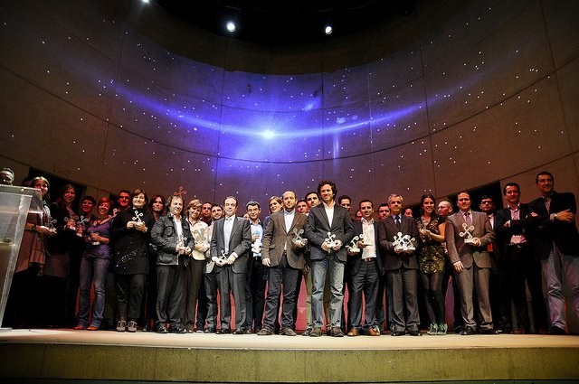

|  |

La Galaxia Xataka fue congregada hace unos días en Madrid para un doble evento: Meets the Experts y los Premios Xataka 2011. A continuación os resumimos todo lo acontecido allí, así como rememorar algunos de los vídeo más interesantes del evento.
Meet the Experts reunió a los usuarios y lectores con muchos de los editores que andábamos por allí para comentar las últimas novedades tecnológicas que leemos a diario en nuestra Galaxia Xataka y probar los gadgets más impresionantes en los distintos stands. Como muestra, Intel nos mostró sus impresionantes ultraportatiles que cualquier desarrollador estaría encantado de llevar a cualquier lugar y Qualcomm sacó músculo con sus procesadores. También hubo oportunidad de probar las últimas novedades de Nintento, HP, Casio, Nokia y BlackBerry , además de Vodafone como patrocinador.
Antes de la entrega de premios pudimos asistir a dos interesantes mesas redonda con expertos en tecnología que nos hablaron del futuro de los smartphones y las tablets. Sin duda, quedó patente que nos acercamos a un futuro en el que el desarrollo para este tipo de dispositivos será importante viendo los avances de cada uno de los fabricantes y marcas presentes en el evento.
Los Premios Xataka 2011, nos dejaron algunos ganadores en el sector que estamos acostumbrados a toquetear como son los ordenadores.
Podéis consultar el resto de ganadores y finalistas en el especial de los Premios Xataka 2011.
En Xataka | Premios Xataka 2011, revívelo en imágenes
| |